Case Study
Enhancing User Experience for Standard Reports
A focused UX redesign that simplifies report workflows through clear navigation and intuitive layouts. The solution uses responsive design and usability testing to reduce complexity and improve overall efficiency, creating a smoother and more productive reporting experience.
Project Overview
Standard Reports is a core product that enables staff to access dashboards for management review and data driven decision making. Used by over 1,800 staff each month since its inception in December 2015, the platform supports monitoring key operations, carrying out simple analysis, and managing portfolios effectively. The project focuses on improving the overall user experience with clearer data visibility and a more efficient filtering system across corporate, regional, country, global practice, and practice manager views. Now in its third iteration, the cloud hosted application is built on Power BI and integrated with the new Data Studio, delivering faster performance, consistent data, and a more reliable reporting experience.
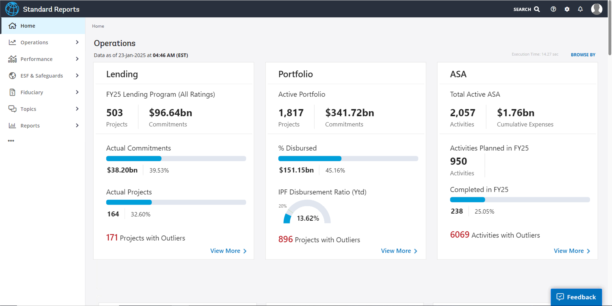
Challenge/ Opportunity
The goal is to improve the experience to monitor key operations, perform simple data analysis, and/or make data-driven decisions.
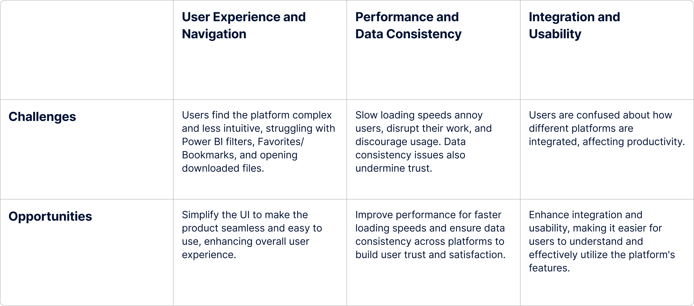
Addressing the Challenges
We followed a lean UX approach to address the various challenges of the project.
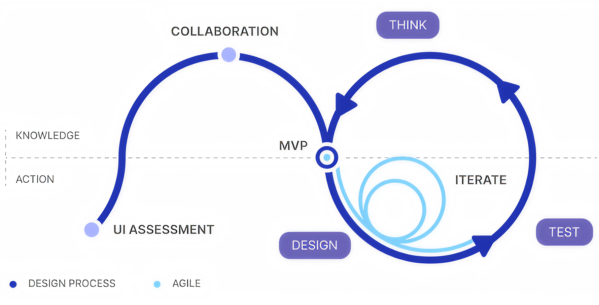
UI Assessment
A thorough qualitative assessment was conducted to understand the current pain points of the existing system. The core objective of the assessment was to observe how users navigate, find information, and complete core tasks in the existing system.
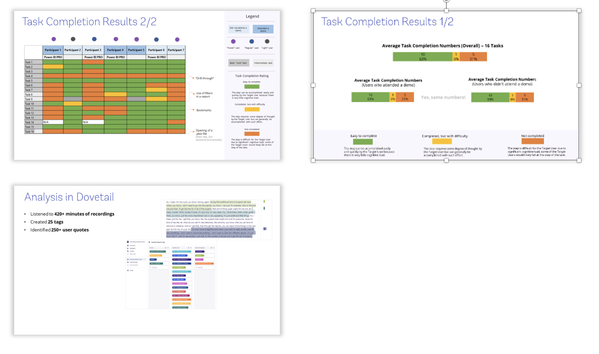
- Almost all participants feel comfortable navigating the platform to find a report / dashboard because the structure of content in the new Standard Reports hasn't changed.
- Overall, participants can complete most core tasks but have difficulty using Power BI filters, understand how Favorites / Bookmarks are different, and open a downloaded Power BI file.
- Standard Reports has lost its much-needed simplicity because it is now more complex, less intuitive, and lacks features important to users.
- The loading speed for the new site is slow for both HQ and COs participants which “annoys” them, disrupts their work, and “discourages” them from using it.
- Data consistency is an issue as numbers in the new Standard Reports are not consistent and / or don't match with data from other platforms.
- Most participants don't understand how different platforms are integrated with each other in the new Standard Reports, which creates confusion and affects productivity.
The information architecture of the new Standard Reports is designed to be simple, intuitive, and efficient. The main navigation is organized around key user tasks and workflows, with clear labels and logical groupings. The layout prioritizes important information and actions, while minimizing clutter and distractions. The design also incorporates responsive elements to ensure a seamless experience across different devices and screen sizes.
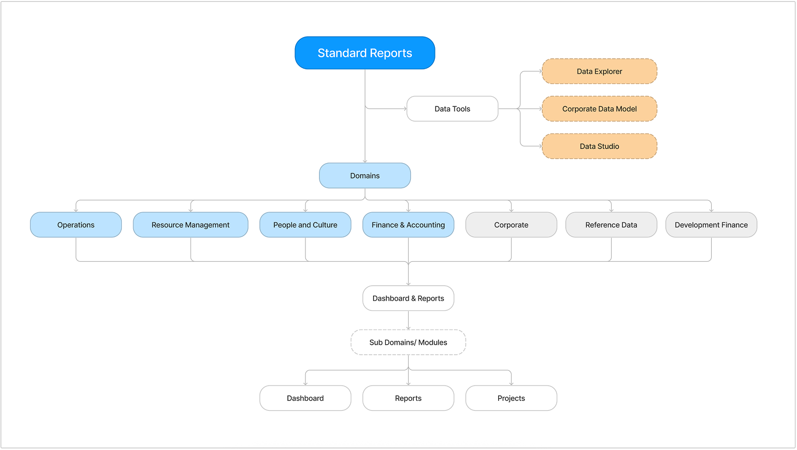
Essential Factors Shaping Our Redesign Strategy
The redesign process was guided by key considerations to ensure that the new Standard Reports would meet user needs and improve the overall experience. These considerations included:
Minimalistic design
With the addition of many reports and dashboards it was important to maintain the core purpose of the Standard reports tool. Hence, we followed a minimalistic design approach where we present the most valuable information upfront and allow the user to decide the next set of actions based on the need.
Ease of use
An intuitive design and simple information architecture that can enable the users to navigate through dashboards and reports with ease and quickly find the reports that they are looking for.
Seamless features
Applying the same visual language, interaction patterns, and terminology across all features for a familiar and predictable experience.
We applied the principles of modularity and reusability to the creation of data-driven charts and graphs of Standard Reports by establishing a library of reusable visual components that can be combined and customized to create various data visualizations.
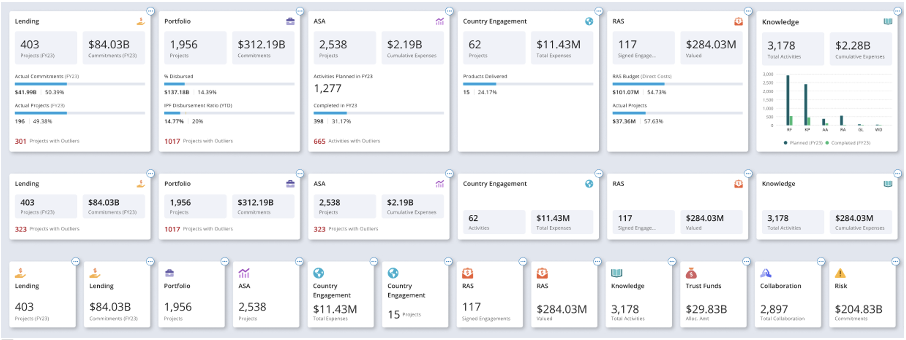
To ensure consistency, efficiency, and quick turnaround we leveraged design components for Standard Report design which also facilitated a seamless handoff with the development team.
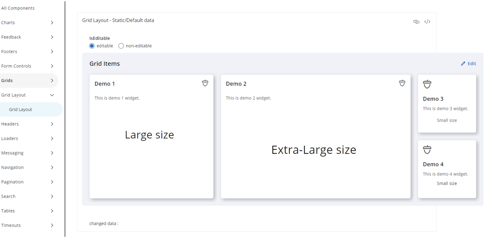
We applied high chart capabilities and framework to establish a design standard/ pattern for the charts on the dashboard.
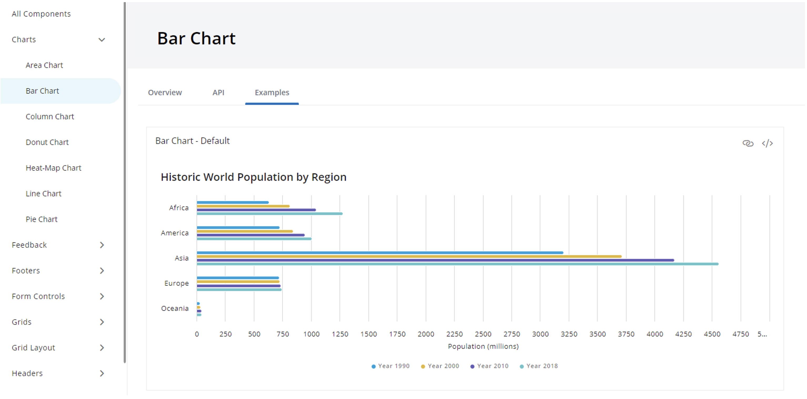
Usability Testing
The purpose of this evaluative study is to gain high-level recommendations to improve the overall user experience of the new Standard Reports before the system is developed. To validate the new version of Standard Reports on improved navigation, especially to and from modules, and enhanced information architecture. Individual participants were asked to complete tasks in order to test the systems navigation, copy, and overall functionality.
Participants were recruited through a random SR user list provided by the product team, as well as some specific recommended names with harsh critics.
Individual participants were asked to complete tasks in order to test the systems navigation, copy, and overall functionality.
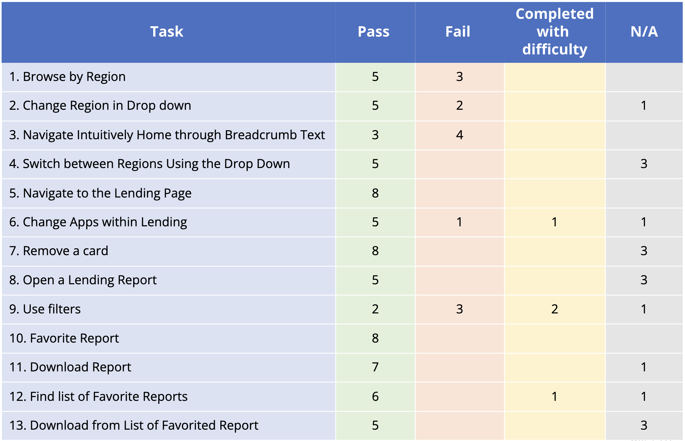
Recommendations
We also received few recommendations that were prioritized for the next cycle of implementation.
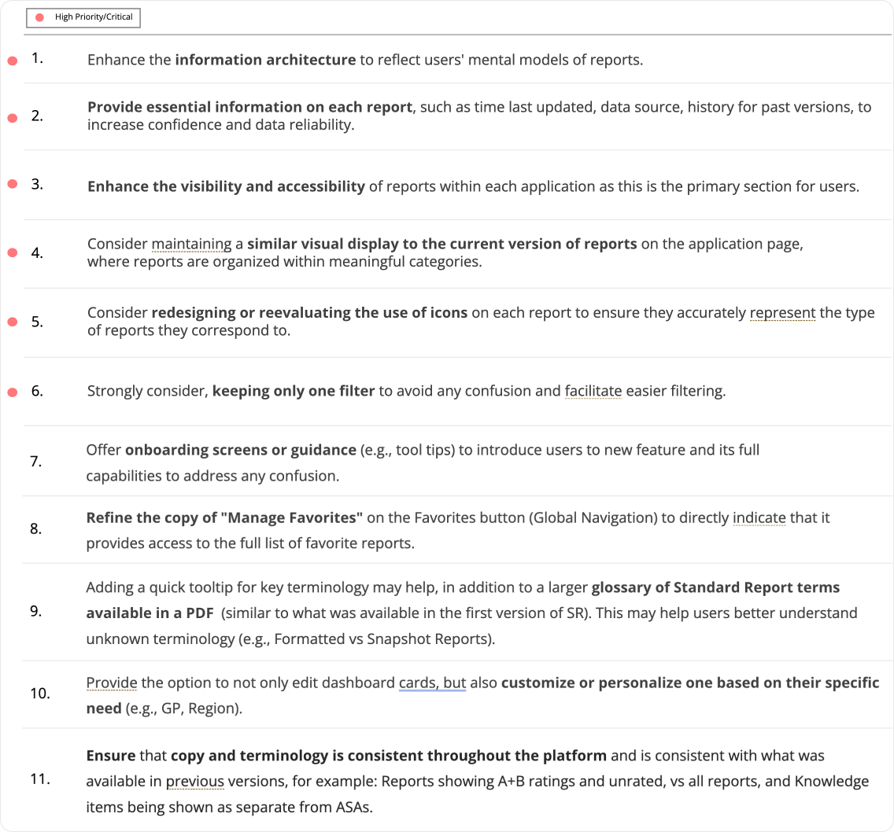
Final Product
The new Standard Reports is a significant improvement over the previous version, with a more intuitive design, clearer data presentation, and faster performance. The redesign has resulted in a more efficient and enjoyable user experience, allowing users to easily navigate through dashboards and reports, find the information they need, and make data-driven decisions with confidence.
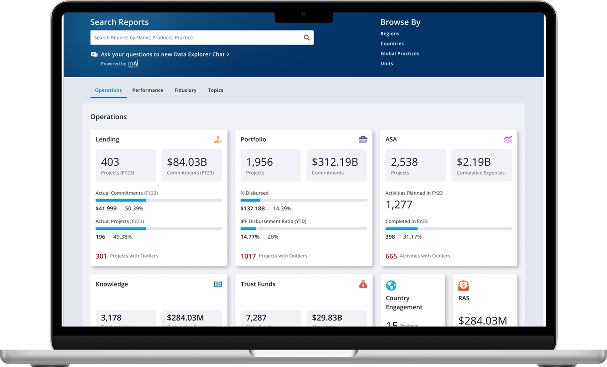
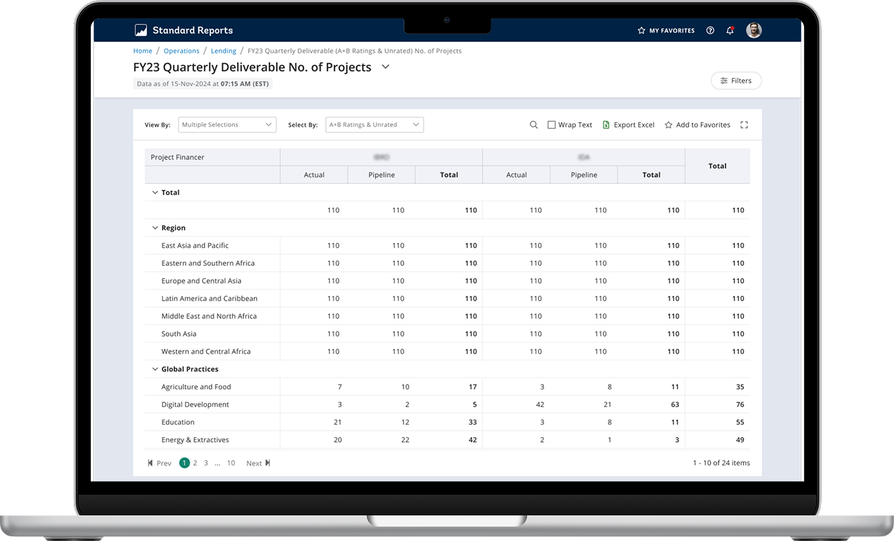
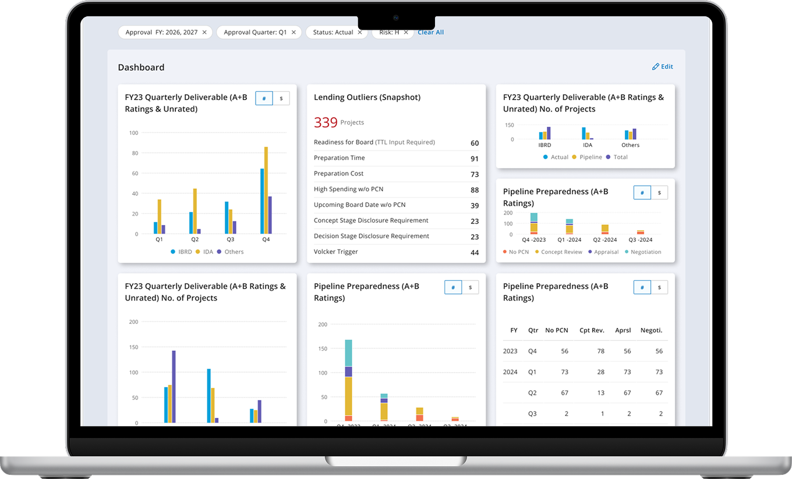
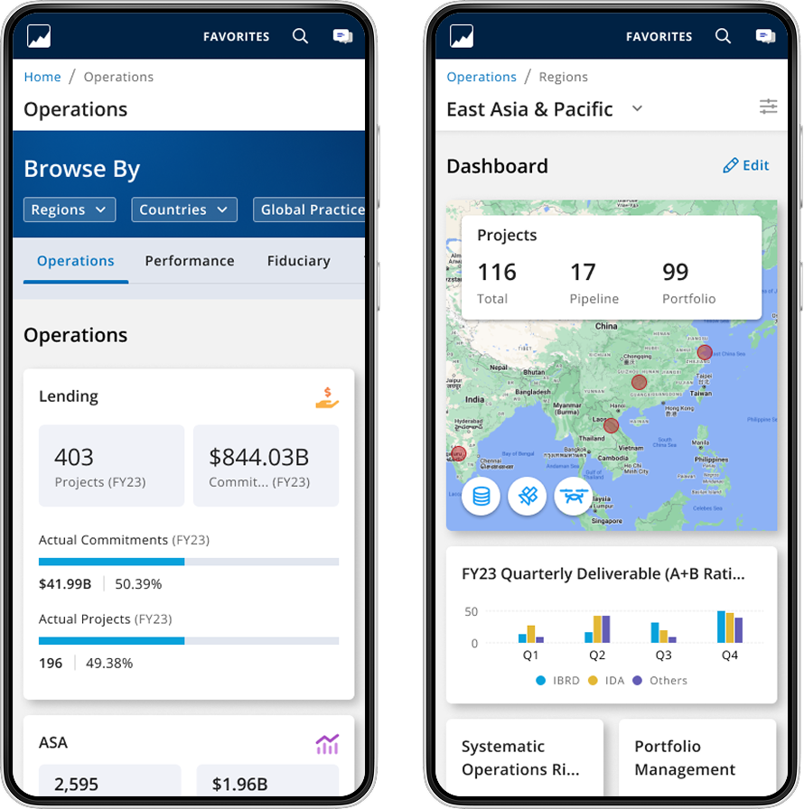